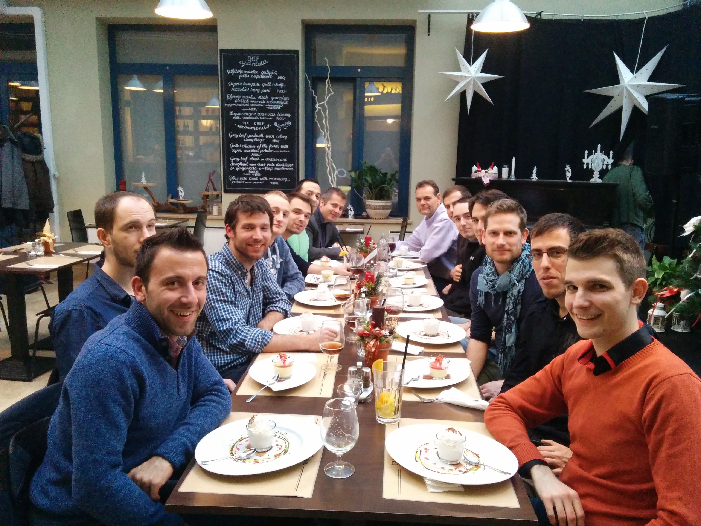

Thank you!

Mate Gulyas, Dmlab, enbrite.ly
Mate Gulyas
Innovative data analytics company, incubates ideas and products.
enbrite.ly - enbrite.lyFraud detection in online advertising. Bot or not?
The enhtusiastic
Why?
The communicator
Why?
The ghost
Why?
The prioritizing ghost
One small step at the time that brings the biggest benefit, and communicate it why we do that, and where we are headed with that.
Or how we change things.
devops pulldevops pushdevops push -fTwitter: @gulyasm Email: gulyasm@enbrite.ly